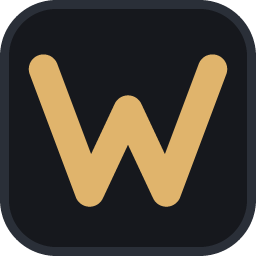

WyvenWyven is a lean editor for Windows, written in Rust and drawn on the GPU. VS Code look, Visual Studio keys, and it opens in a blink.
Installs for your user, no admin rights. Windows 10/11, 64-bit.
Roslyn for C#, TypeScript, HTML, CSS and JSON servers: errors, completion, rename, references, inlay hints, CodeLens.
F5, F9, F10, F11 like Visual Studio. Variables, watches, call stack, attach to Godot.
Change bars, side-by-side diffs, commit, sync, branches and blame – all in the background.
Inline suggestions from a free local model through Ollama, or Claude with your own key.
Claude Code sees your file, selection and errors; its edits arrive as diffs you accept with Ctrl+Enter.
Drag panels left, right or down. Use any installed VS Code theme, with live preview.
Workspaces with many folders, compatible with VS Code's .code-workspace files.
WebAssembly plugins in a sandbox: they see the editor, never your files or the network.
Checks once a day, asks before installing and verifies every download.
| Alt g c | git commit – a popup shows the next keys, so nothing has to be memorized. |
| Ctrl+Q | One search field for files, > commands, @ symbols and : lines. |
| Ctrl+D | Next occurrence as another cursor. |
| Alt v c | Pick a color theme with live preview. |
| Alt a c | Start Claude Code in the terminal, already connected. |
| Alt h | Cheat sheet with every shortcut. |